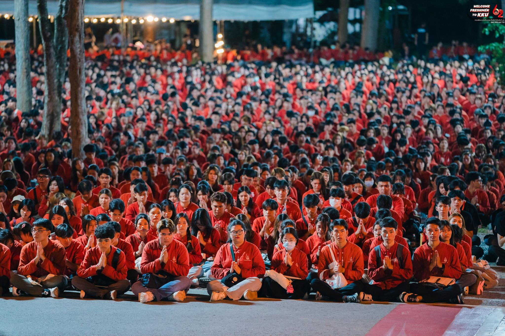
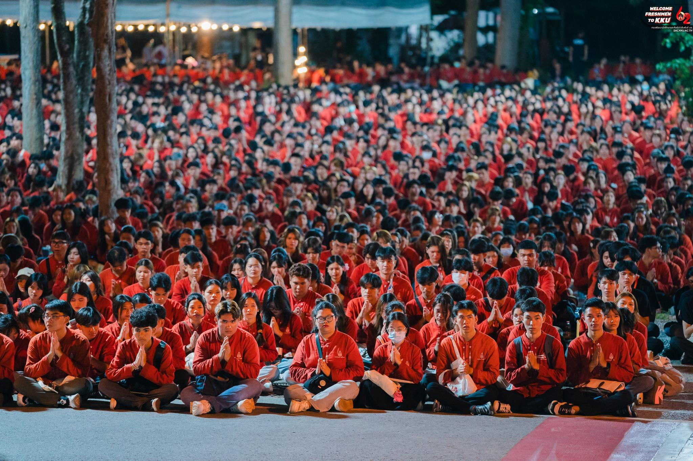
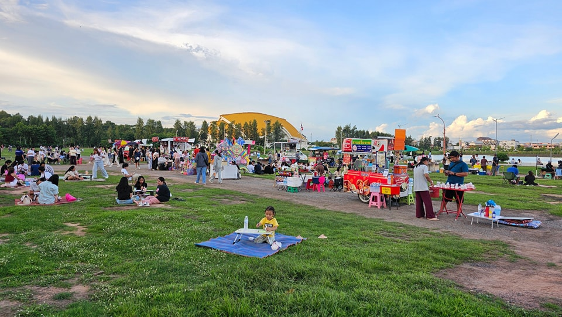
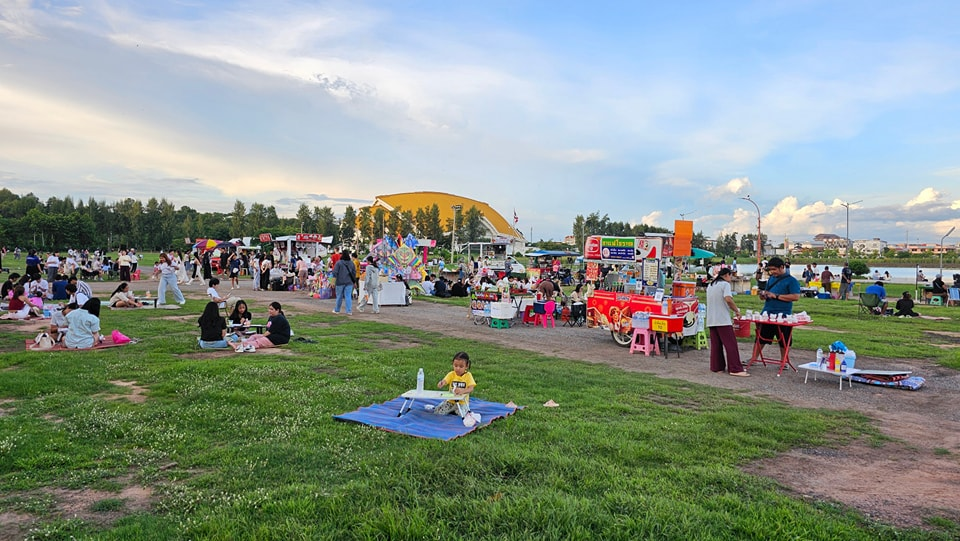
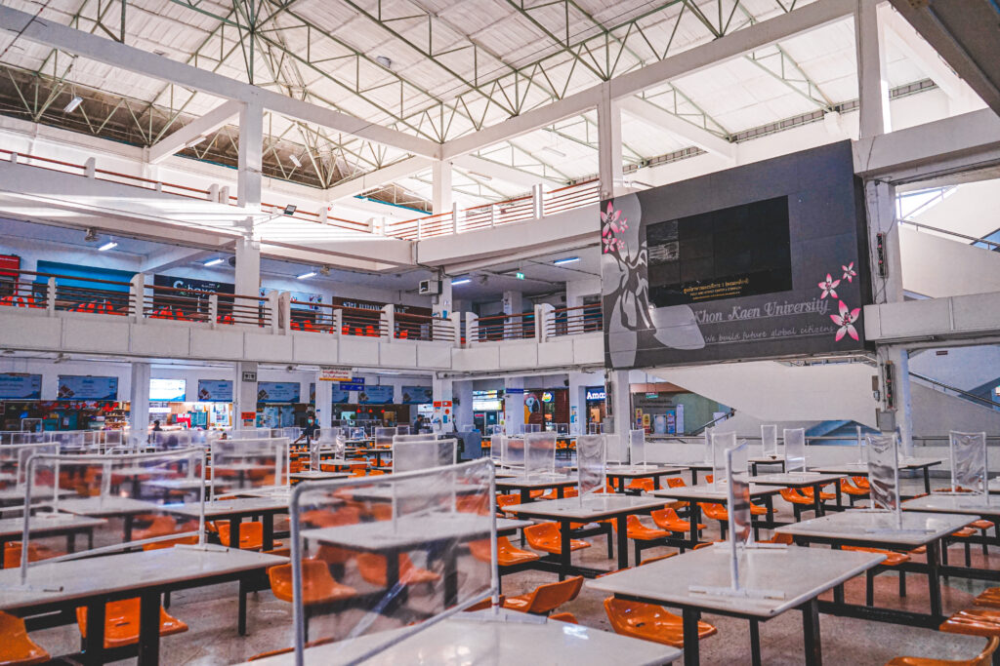
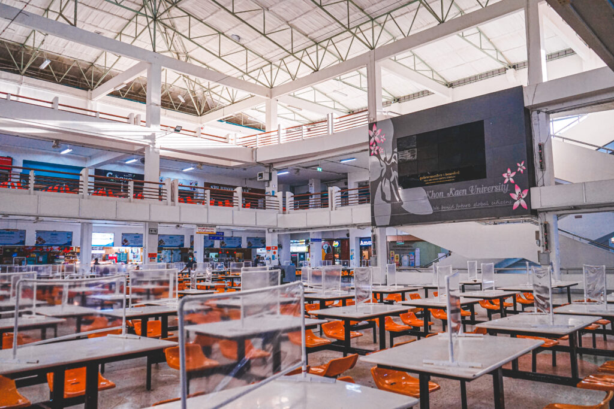

01
แลนด์มาร์กประจำมอ
ศาลเจ้าพ่อมอดินแดง
Mor Din Daeng Shrine
จุดศูนย์รวมใจของนักศึกษาและบุคลากร หลายคนแวะมากราบสักการะ ขอพร ก่อนเริ่มเรียนหรือก่อนสอบ บรรยากาศร่มรื่น มีที่นั่งพักและถ่ายรูปได้รอบ ๆ
 

 



 
